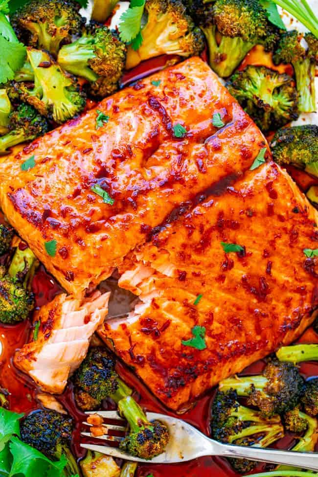

!DOCTYPE html>
Basic Recipe Website
Easy Sheet Pan Salmon and Broccoli

Description
This Asian-style salmon is tender, moist, not overcooked in the least, and the broccoli remains perfectly crisp-tender and so juicy from the sauce
Ingredients
- 1.50 pound skin-on salmon fillet
- 3 cups broccoli florets
- 3 to 4 tablespoons honey
- 3 tablespoons reduced-sodium lite soy sauce
- 3 tablespoons sesame oil
- 1 heaping tablespoon chili garlic sauce
- 1 tablespoon rice vinegar
Steps
- Preheat oven to 375F (use convection if you have it), line a baking sheet with aluminum foil for easier cleanup (highly recommended), spray with cooking spray, place the salmon skin-side down on the baking sheet, and nestle the broccoli directly around it, evenly spaced; set aside.
- To a small bowl, add all remaining ingredients (except cilantro), and slowly spoon most of the mixture over the salmon, and just dot the broccoli with the sauce. It will absorb the runoff sauce from the salmon so no need to put much sauce on it from the outset.
- Bake for 375F for about 12 to 15 minutes, or until salmon is nearly done.
- Turn Broiler to High, and broil for 3 to 5 minutes to finish cooking.
- Alternatively, if you're not comfortable broiling, simply continue baking the salmon for a few extra minutes, or until done; don't overcook or the salmon will be dry and the broccoli will burn.
- Serve immediately.